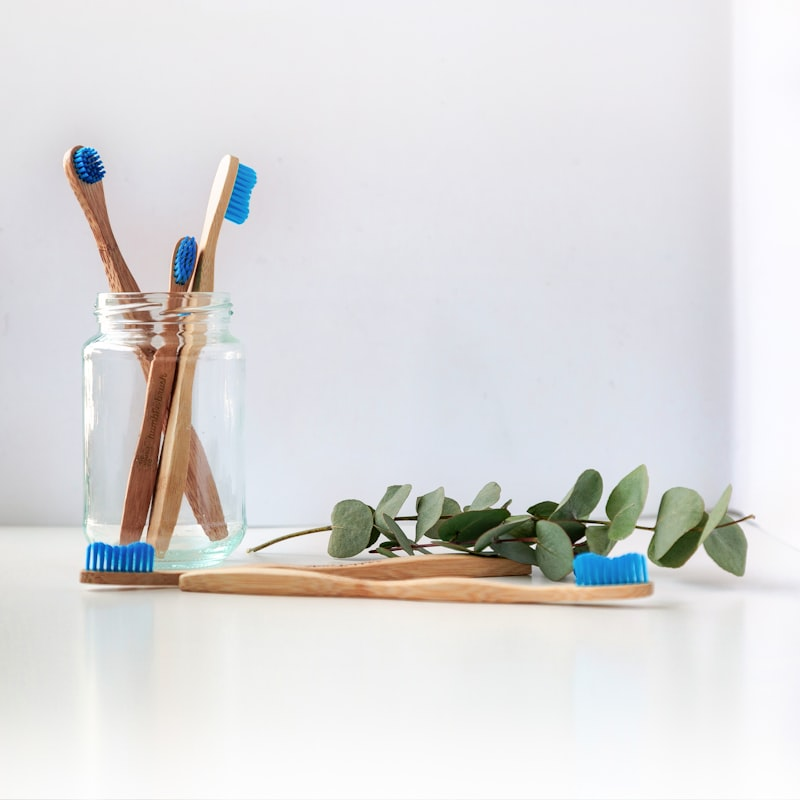

Have you ever noticed that food tastes different when your digestion is off? A meal that once felt satisfying can suddenly taste flat, bland, or strangely unappealing after a course of antibiotics, a bout of illness, or a long stretch of poor eating. Most of us shrug it off as bad luck or a passing bug. But a growing body of research suggests something more interesting is going on — a quiet conversation between your gut and your senses.
Scientists call it the gut-nose axis: the idea that the trillions of microbes living in your digestive tract can influence how you smell, how you taste, and even which foods you crave. It's an emerging field, and much of it is still being mapped. Yet the early findings are striking enough to change how you think about that nightly craving for sugar — and where it actually comes from.
What Is the Gut-Nose Axis?
The gut-nose axis is the emerging two-way relationship between your intestinal microbiome, your nasal passages, and the sensory systems that govern smell and taste. Researchers are finding that the same microbes that break down your food also produce chemical compounds — metabolites, short-chain fatty acids, and neurotransmitters — that can reach the bloodstream, the nervous system, and even the lining of your nose.
Several mechanisms are already coming into focus:
- Metabolite signaling — gut bacteria ferment fiber into compounds like butyrate, which influence inflammation and nerve signaling throughout the body
- Neurotransmitter production — certain microbes influence serotonin and other signaling molecules tied to appetite and reward
- The vagus nerve — the main highway between gut and brain, constantly carrying information upward
- Taste receptors in the gut — the same receptors found on your tongue also exist in your intestinal lining, where they sense nutrients and signal satiety
The Microbes That Shape Your Cravings
Here is the part that surprises most people: your cravings may not be entirely your own. Different microbial communities thrive on different fuel. Some flourish on fiber and plant compounds; others prefer simple sugars and refined starches. According to a now well-known line of research, gut microbes can influence host eating behavior — nudging you toward the foods they need to survive.
This doesn't mean you have no free will over your diet. But it does explain why a sugar-heavy gut can feel like it's pulling you toward sweets, while a fiber-rich, diverse gut tends to make whole foods more appealing over time. Your taste preferences are not fixed — they are, in part, a reflection of the community living inside you.
"You are not just feeding yourself at every meal — you are feeding an ecosystem. And that ecosystem, over time, learns to ask for what it wants."
Why Food Tastes Different After Antibiotics
One of the clearest windows into the gut-nose axis is what happens after antibiotics. Broad-spectrum antibiotics don't just target the infection — they can wipe out large swaths of your resident microbiome, temporarily reducing its diversity. Many people report that food tastes metallic, bland, or simply "off" during and after a course of antibiotics.
Part of that is direct — some antibiotics affect the taste buds themselves. But part may be microbial. When the gut community is disrupted, the signaling that normally shapes appetite and sensory reward is disrupted too. As the microbiome recovers over the following weeks and months, taste and appetite usually return to normal. For a deeper dive on that recovery process, see our guide on how to heal your gut after antibiotics →
Smell and the Nasal Microbiome
Your nose has its own microbial community, and it appears to be in constant dialogue with your gut. The nasal passages are a first line of immune defense, and when the balance of microbes there shifts — during allergies, colds, or chronic sinus trouble — your sense of smell can dull. Researchers are now exploring whether a healthier gut, by calming systemic inflammation, may indirectly support a sharper sense of smell.
Lost Smell, Lost Appetite
The link between smell and appetite is easy to underestimate until it's gone. The vast majority of what we call "taste" is actually smell — the aroma of food rising through the back of the throat. When smell fades, eating becomes mechanical instead of pleasurable, and appetite often follows it down.
This is one reason why supporting sensory and gut health together matters. A diverse, well-fed microbiome helps regulate the inflammation and neurochemistry that keep both systems working. Our article on the mouth-gut connection → explores how the microbial community at the very start of the digestive tract shapes the rest of the journey.
How to Support Your Gut-Nose Axis
The encouraging news is that the same habits that support a healthy gut appear to support healthier senses and steadier cravings. The levers are practical and unglamorous — which is exactly why they work.
- Eat a wide variety of plants — aim for 30 different plant foods a week to feed diverse microbial communities
- Include fermented foods — yogurt, kefir, sauerkraut, and kimchi introduce and support beneficial strains
- Feed your fiber fermenters — prebiotic vegetables, legumes, and resistant starch produce the short-chain fatty acids that calm inflammation
- Protect your sleep — the gut and sensory systems both reset on a circadian rhythm
- Go gently after antibiotics — rebuild diversity slowly with fiber and fermented foods rather than expecting instant recovery
- Stay hydrated — saliva and mucus are essential to both taste and smell
💡 A grounded view. The gut-nose axis is promising, not proven. Nobody is suggesting a probiotic will restore your sense of smell tomorrow. What the research does support is the broader principle GutWise keeps returning to: your body is one interconnected system, and caring for your gut is caring for far more than digestion.
Give It Time
Changes to taste and craving rarely happen overnight. The microbiome is remarkably adaptable, but it responds on a scale of weeks and months, not days. Many people find that after a few weeks of eating more plants and fermented foods, sugar cravings soften and whole foods begin to taste sweeter and more satisfying. That shift is the ecosystem recalibrating — and it is one of the clearest signs that your gut is healing.
The gut-nose axis is a reminder that your senses are not isolated instruments. They are wired into the same living system that digests your food, regulates your mood, and defends your health. When you feed that system well, every part of you — including the way the world smells and tastes — tends to follow.
🌿 Support your senses from the inside out. A calm, diverse gut is the foundation for steadier appetite, clearer senses, and genuine daily vitality. Many people find that simple rituals — like a warming cup of Cardio Slim Tea or All Day Slimming Tea alongside a whole-food, gut-friendly routine — help them stay consistent long enough to feel the difference. Explore natural gut health solutions →